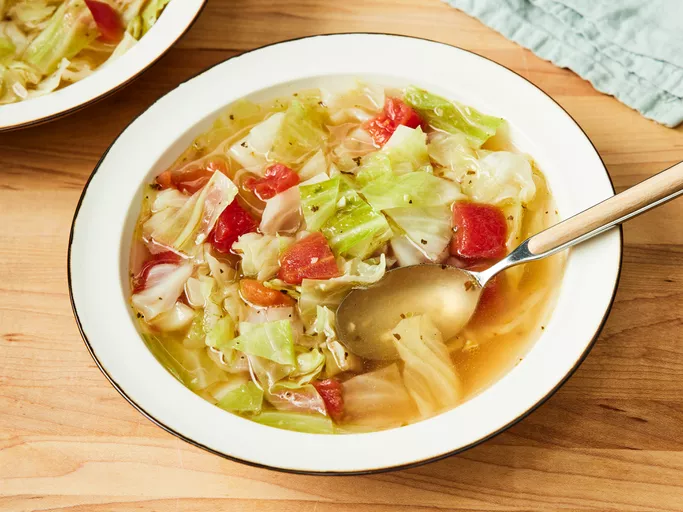

Home
Cabbage Soup

Description
This soup boasts a garlicky broth that's incredibly comforting when you're under the weather.
Home cooks appreciate the soup's versatility for adding protein or extra vegetables.
Ingredients
- 3 tablespoons olive oil
- ½ onion, chopped
- 2 cloves garlic, chopped
- 2 quarts water
- 4 teaspoons chicken bouillon granules
- 1 teaspoon salt, or to taste
- ½ teaspoon black pepper, or to taste
- ½ head cabbage, cored and coarsely chopped
- 1 (14.5 ounce) can Italian-style stewed tomatoes, drained and diced